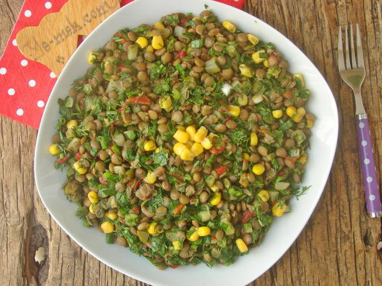

Yemek Tariflerine Hoş Geldiniz
Anasayfa
Çorbalar
Ana Yemekler
Salatalar
Mezeler

Mercimek Salatası
Malzemeler
- 1 su bardağı yeşil mercimek
- 3-4 dal taze soğan
- Yarım demet maydanoz
- Yarım demet dereotu
- 1 adet kırmızı kapya biber (isteğe bağlı)
- 1 adet salatalık turşusu (isteğe bağlı)
- 2 yemek kaşığı zeytinyağı
- 1 adet limon suyu
- Tuz
- Pul biber, karabiber, kimyon (isteğe bağlı)
Yapılışı
-
Mercimeği yıkayıp tencereye alın, üzerini geçecek kadar su koyup yumuşayana kadar haşlayın. (Çok
fazla ezilmemesine dikkat edin.)
-
Haşlanan mercimekleri süzüp geniş bir kaba alın.
-
Yeşillikleri (soğan, maydanoz, dereotu) ince ince doğrayın.
-
Kapya biberi ve turşuyu küçük küpler halinde doğrayın.
-
Tüm malzemeleri mercimeğin üzerine ekleyin.
-
Zeytinyağı, limon suyu, tuz ve baharatlarla tatlandırın.
-
Güzelce karıştırıp servis edin.
👉 Bu salatayı özellikle akşam yemeklerinde, meze olarak veya ana yemeklerin yanında
tüketebilirsiniz.